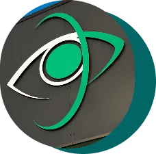

L’analyse de votre vue
Nos opticiens diplômés réalisent un bilan complet et précis de votre vision.
Grâce à des équipements modernes, nous détectons les besoins exacts de vos yeux, qu’il s’agisse de correction pour la vue de près, de loin ou les deux (presbytie). Ce diagnostic garantit un confort visuel optimal.
Prendre rendez-vous